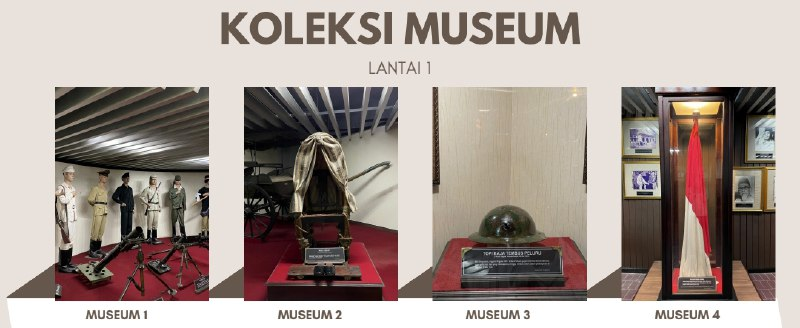

1st Floor — Museums 1 to 4
Follow the arrows on the floor from Museum 1 to Museum 4. Below are short guides and audio for each museum. Tap play to hear the audio.
Museum I — Proclamation 1945
- Replica of the proclamation microphone (17 Aug 1945)
- Weapons: bamboo spears, captured guns, wasp nests
- Soldier statues and messenger pigeons
Museum II — Guerrilla War
- Old telephones and walkie-talkies
- Sewing machine for uniforms; guerrilla route map
- Original stretcher of General Soedirman
Museum III — March 1, 1949
- Community kitchen and Red Cross post
- Simplex bicycle of Lieutenant Marsoedi
- Bullet-pierced helmet of Soepanoto
Museum IV — Yogyakarta as Capital
- Bed of President Soekarno
- Desk of Sultan Hamengku Buwono IX
- Duplicate national flag (since 1969)